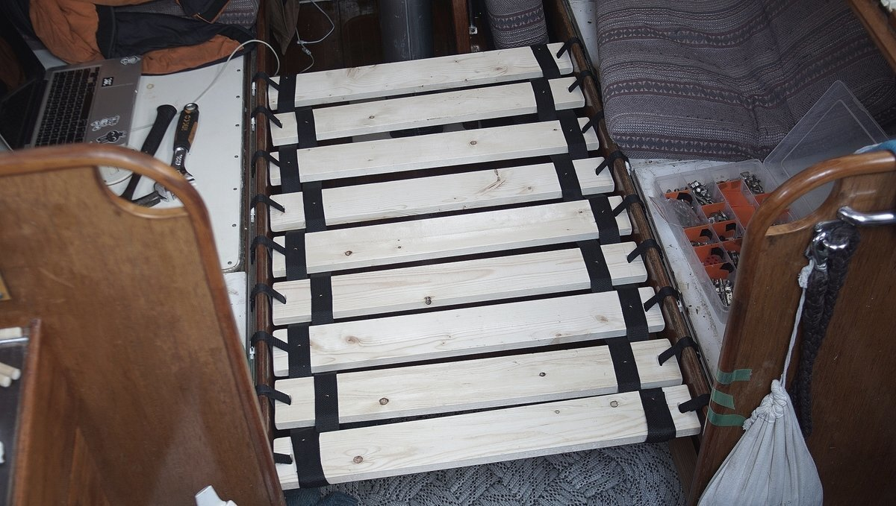
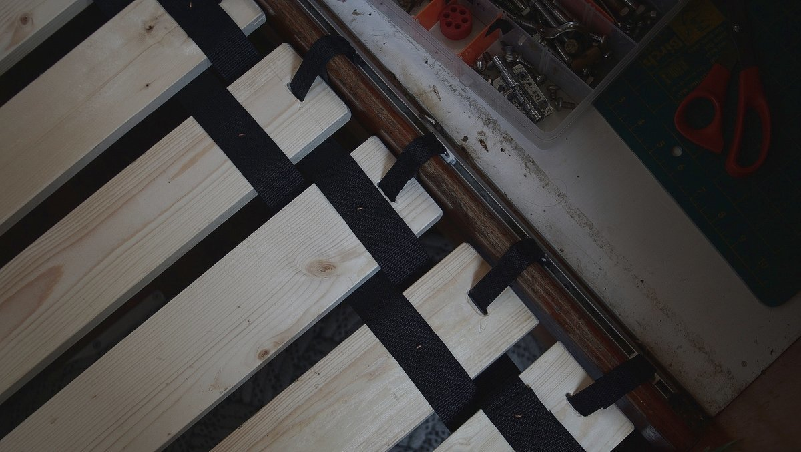
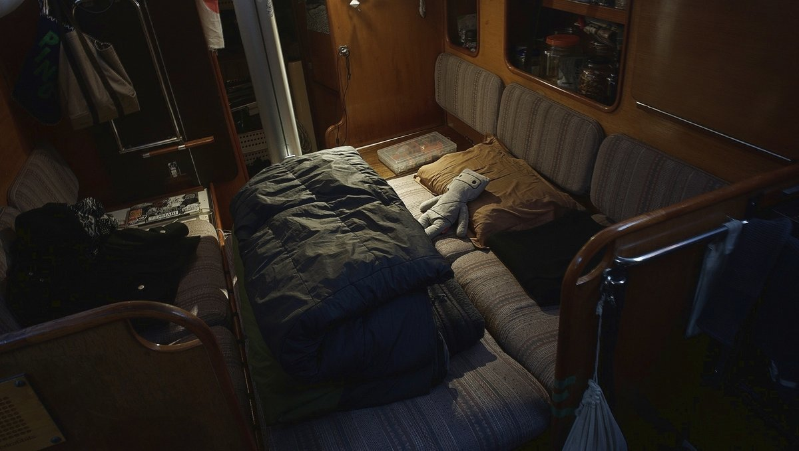

bed
06.11.20
Victoria BC, Canada.
We built the bed aboard pino by joining pieces of 20 mm x 85 mm (0.7 x 3.5 in) of pine between the two side-berths by using the lee cloth tracks. We have some knots in our wood, which we know can weaken the slats, but because they're short we're not too worried—also, knot-free wood is 3 times more expensive.
We used to sleep in the v-berth, but thought the space was too restrictive. We thought that making a bed in the main saloon would also be ideal in winter, since this is where our woodstove resides.
We bore long and narrow gaps on either side of each slat of wood, wide enough to accomodate a 20 mm (0.7 in) wide strip of nylon webbing. We passed the webbing through the gap, then through a nylon slide, and closed the loop by stitching the two ends of the webbing together. Of course, we measured the length of the webbing to ensure that all loops are even so that the bed sits straight.
To further strengthen the bed, and to keep the slats evenly spaced, we added two long 38 mm (1.5 in) wide strips of webbing on either end of the slats. In this version of the bed, we nailed the webbing onto the slats with tacks. We later changed that. We took the tacks out, and instead overlapped two strips of wide webbing—one below the slats, one above, on each end— and added stitching between each slat. The stitched webbing ensures that the slats are evenly spaced, and helps to distribute our weight uniformly throughout.
The slats support the cushions, while providing air circulation. Boat beds are usually just foam cushions on a bunk, and condensation forms due to the temperature difference between the warming foam (as you sleep on it) and the underlying colder surface.
We've seen people adding a synthetic mesh underliner (e.g. Dry Mat, or Moisture Prevention Underliner by Sailrite), a layer that promotes consistent airflow, it is a good, but expensive option. Allowing airflow between the foam and the underlying surface is only half the work, insulating the space is just as important. See winter insulation.
In all, it makes for a great double-bed! We re-use all of the saloon cushions to form the mattress, and overlay layers of blankets on top to make it more comfortable. It is easy to take apart and to put together. We stack the slats together in a pile, and throw them in a bunk.